All 98 pictures from Trevor Hall's 1983 BBC Micro adventure, drawn by the game's own code.
Play the game in your browser.
The game draws its pictures with a program at $3C00 that only asks the BBC to change
screen mode and palette and to draw lines; it fills the shapes itself, straight into screen memory.
These were made by running that code in the 6502 emulator in c/m6502.c, with just enough
of the BBC's VDU drivers (c/pictures.c). playtkv shows them in the terminal
as you play, and readtkv picture XX file.png saves one. Numbers are as in the table at
$1F00; locations are given as names and numbers. Pixels are MODE 5's, twice as wide as tall.
Locations
The view on arriving somewhere, or with PICTURE.
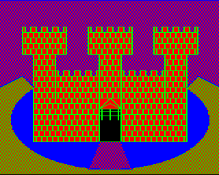
$0B in the desert which surrounds the castle $28
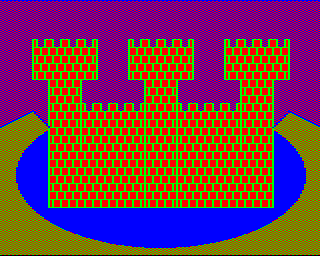
$0D in an arid desert $2A; in an arid desert $2B; at the back of the castle $2E
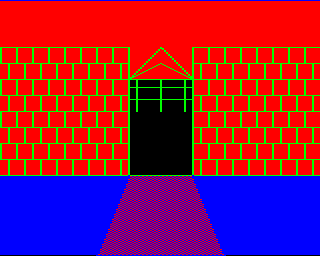
$0E on the draw bridge $29
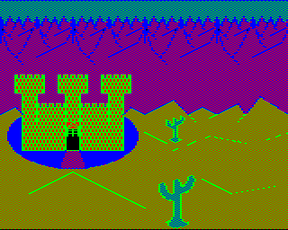
$15 in an arid desert $24
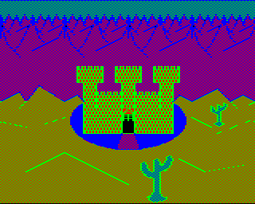
$16 in an arid desert $25
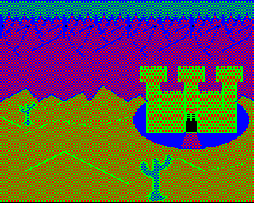
$17 in an arid desert $26
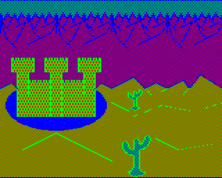
$18 in an arid desert $27
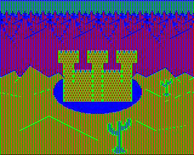
$19 in an arid desert $2C
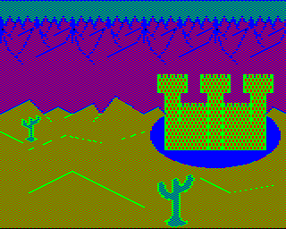
$1A in an arid desert $2F
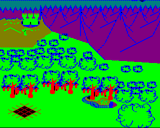
$21 in a clearing $05
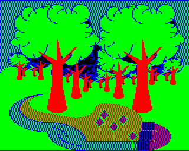
$27 by a spring $03
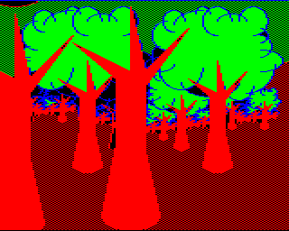
$28 wandering through dense forest $0F; wandering through dense forest $10
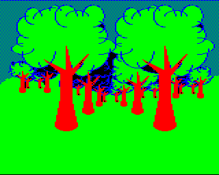
$29 wandering through the woods $0A; wandering through the woods $0C; wandering through the woods $0E; in a pleasant wood $12; at the end of a winding trail $17; wandering through the woods $9A; in the woods $A4
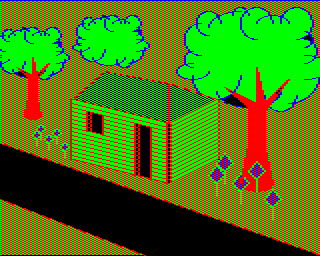
$2E on a road $01
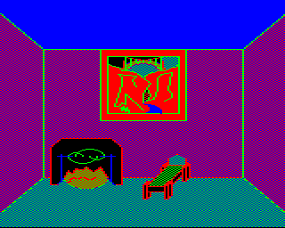
$2F inside a wooden cabin $00
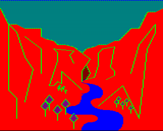
$31 on the canyon floor $1D
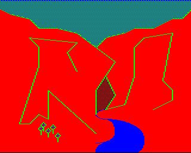
$32 at the west end of the canyon $1E; in a narrow fissure $87
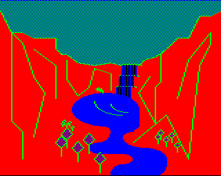
$33 in a deep canyon , to the east is a grand view of a waterfall $1C
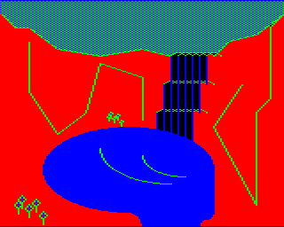
$34 close by a large rock , sitting on the canyon floor $1B
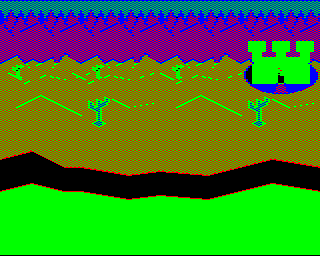
$3E on the south edge of a deep fissure $19
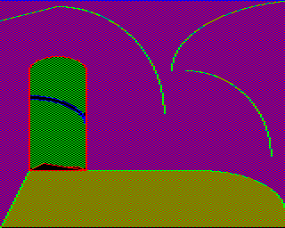
$45 on a landing $69
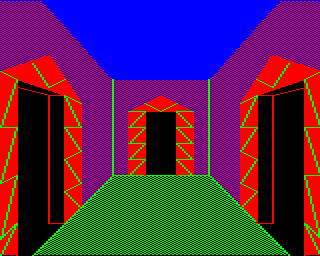
$49 in a corridor $5A
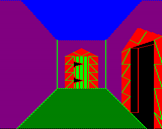
$4C in a corridor $59; in a corridor $5D
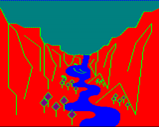
$4F in a very narrow fissure $1F
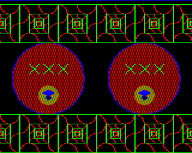
$53 in The Sword Inn $9D
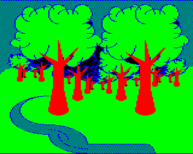
$57 by a babbling brook $04; by a small stream $08; by a stream $09
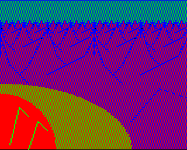
$58 wandering through high mountains $11; wandering through high mountains $31; wandering through high mountains $A1; wandering through high mountains $A5; wandering through high mountains $AB
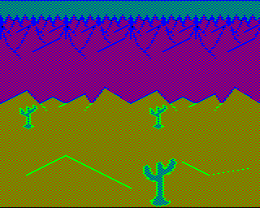
$59 in an arid desert $2D; in an arid desert $80; in an arid desert $81; in an arid desert $82; on The Crystal Bridge $97
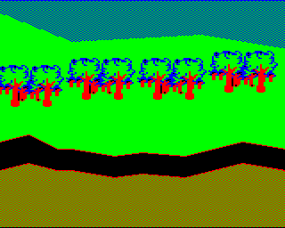
$5A on the edge of a deep fissure $23
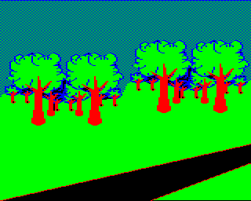
$5C on a road $02
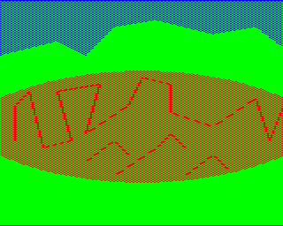
$5D at the top of a steep scree slope $06; on a pile of jagged rocks $0B
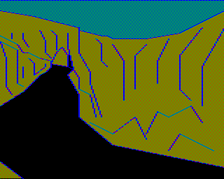
$62 in a disused flint quarry , large blocks of stone dwarf the twisty road $07
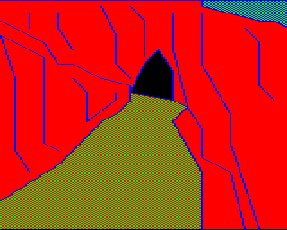
$63 on a steeply sloping trail $18
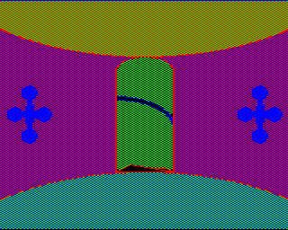
$65 in the north turret $4E; in the west turret $4F; in the south turret $50; in the east turret $51
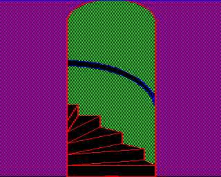
$67 in the west tower $52; in the north tower $53; in the south tower $54; in the east tower $55; on a spiral staircase $6A
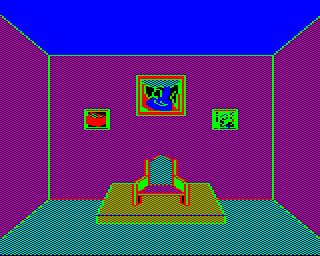
$6D in the throne room $57
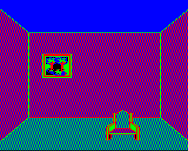
$6E in a room $56
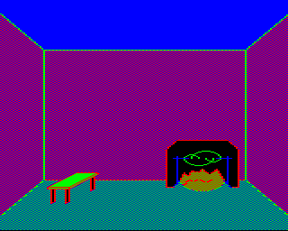
$70 in a kitchen $3B
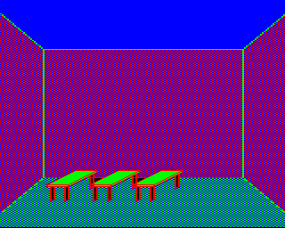
$71 in the dining hall $39
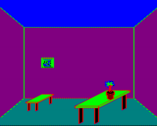
$72 in the study $38
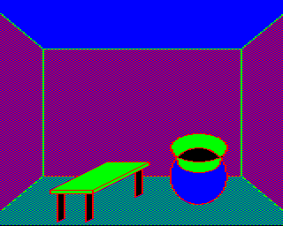
$74 in a workshop $3C
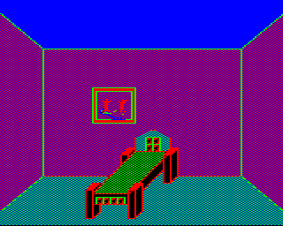
$7A in the royal bedroom $5B
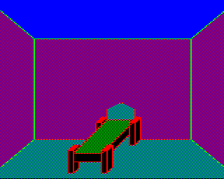
$7B in a bedroom $5C
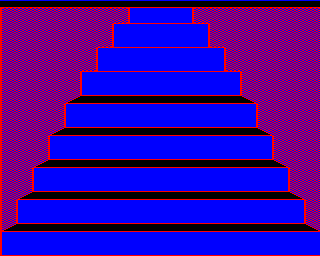
$7C on the Grand Staircase $3A
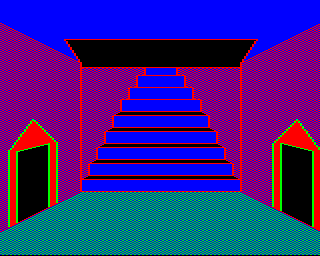
$7D in the castle entrance hall $34
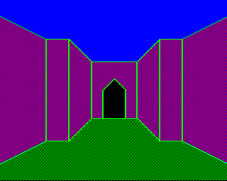
$7E on the landing $58
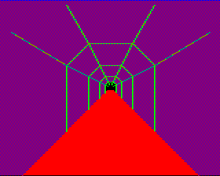
$80 in a passage $3E; in a passage $40; in a passage $41; in a narrow passage $42; in a very narrow passage $43
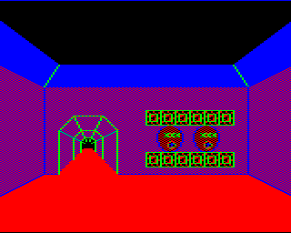
$82 in the cellar $3F
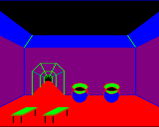
$83 in the store room $3D
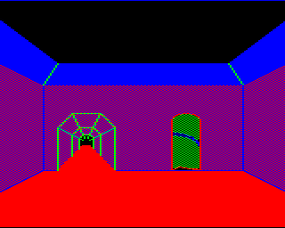
$84 in a small room $44$86 in a narrow passage $36; in a wet passage $62; in a dank musty passage $63; in a narrow shaft $66; in a narrow shaft $6E$88 in a small chamber $6B$89 in a damp hall $4C; in a dungeon $65; in a room $6C; in a cave $8B; in a cave $8E$8A in a cave $35; in a room $68$8C in the strong room $B0$90 in a large hall $48$92 by a cliff top $16; by a cliff top $20; to the north of a deep canyon $21; by a cliff top $22$93 at the top of a waterfall $15$94 on a cliff top $83; on a cliff top $84; on a cliff top $85; on a cliff top $86$95 at Watersmeet $89$96 in a narrow fissure $88$97 in The Hall Of The Forest King $6D$9C in a damp hollow chamber $64$9D in a room $4D$9E in the armoury $46$9F in a musty dungeon $49; in a dungeon $A8$A0 in a dungeon $4B$A3 in a pokey anteroom $4A$A4 by a narrow river $0D; by a deep river $13$A5 in a small bedroom $5E$A6 in a small sitting room $5F$A7 in a small kitchen $60$A8 in a passage $47; in a long dry passage $61; in a passage $67; in a short passage $AA$A9 in the guard room $45$AD on a road $99$AE at the end of the road $9B$B0 on a road $98$B1 on a moor $9C; on a moor $9E; on a moor $9F$BA in a large hollow chamber , a river of gold flows through the chamber to the north $AE$BE in a room full of bones $6F$C0 wandering through high mountains $14; wandering up the west mountains $8A; wandering through high mountains $A2; wandering through high mountains $A6; wandering through high mountains $AC$C1 wandering through high mountains $30; wandering through high mountains $A0; wandering through high mountains $A3; wandering through high mountains $A7; wandering through high mountains $AD
Objects
LOOK at one of these while carrying it.
$B9 a long wooden staff$BB a short dagger$C2 a crystal ball$99 a broad sword$BD a short wooden rod$BF a large cut diamond
Close-ups
LOOK PICTURE in a few places, see $420A.
$55 inside a wooden cabin $00; first of three in the throne room $57$4E second of three in the throne room $57$51 third of three in the throne room $57; in the study $38$54 in a room $56; in the royal bedroom $5B
Changes
Pictures that replace others when something happens.
$38 at the west end of the canyon $1E, after the first wave of the rod$35 on the canyon floor $1D, after the first wave of the rod$40 on the south edge of a deep fissure $19, after the first wave of the rod$5B on the edge of a deep fissure $23, after the first wave of the rod$0C the drawbridge closed
The end
The secret of life is simple yet complex, as is the picture of it.
$C3 the secret of life, the last frame of its animation